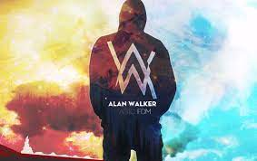

Alan Olav Walker（艾倫·奧拉夫·沃克)


沃克生於英格蘭北安普頓，兩歲時與挪威籍母親和英國籍父親搬到挪威卑爾根。在數位時代中長大，沃克開始對電腦感興趣，後來被編程和平面設計吸引。他沒有任何音樂背景，只依靠觀看 YouTube 影片自學。從2011年便開始學習及嘗試製作音樂，他用筆記型電腦做了30至40首歌。
2012年，沃克找到了義大利的唱片騎師 David Whistle（以前稱為DJ Ness），並向他學習製作音樂，並使用了為初學者而設的編曲軟體 FL Studio。同年，他開始將自己所創作的音樂上傳到YouTube頻道和 SoundCloud 頁面，在網上的評價幫助下，他的音樂受到了音樂品牌的注目。